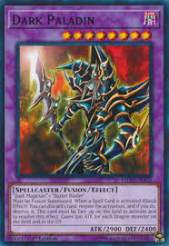
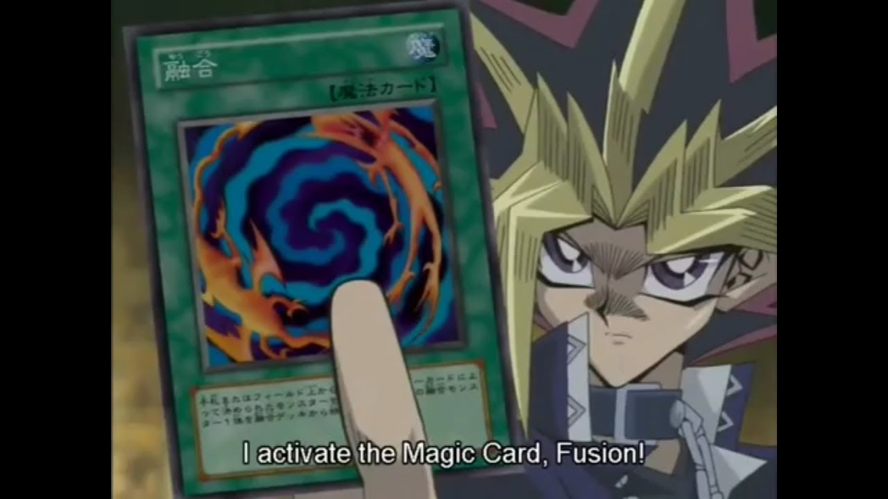
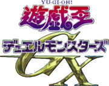

Fusion Summon

A Fusion Summon (融ゆう合ごう召しょう喚かん Yūgō Shōkan) is the act of Special Summoning a Fusion Monster from the Extra Deck using the effect of a card that states that it performs a Fusion Summon.
How to Fusion Summon

A player can Fusion Summon a Fusion Monster from the Extra Deck by activating a card or effect that performs a Fusion Summon. When that effect resolves, the player uses appropriate Fusion Materials listed on a Fusion Monster by moving them from some location(s) to another location, as specified by the effect performing the Fusion Summon (usually sending them to the Graveyard or banishing them). After that, the player Summons the Fusion Monster from the Extra Deck to an unoccupied Main Monster Zone that a Link Monster points to or an Extra Monster Zone in face-up Attack or Defense Position.
Prior to the introduction of the Extra Monster Zones, a monster could be Fusion Summoned to any Monster Zone.
Even if all appropriate Monster Zones are occupied, a Fusion Monster can still be Fusion Summoned as long as at least one of the Fusion Materials used is in one of these Zones, so that there is an available Zone when the Fusion Monster is Summoned.
Effects
Like other Extra Deck monsters, if a Fusion Monster is not Fusion Summoned first, it cannot be Special Summoned from the Graveyard or while banished (unless it specifies another way to properly Special Summon it, in which case it must first be Summoned that way).
For example, if a Fusion Monster is Special Summoned from the Extra Deck by the effect of "Cyber-Stein" and sent to the Graveyard, or was sent to the Graveyard by "Fusion Guard", it cannot be Special Summoned from the Graveyard by "Re-Fusion"; however, if it was originally Fusion Summoned by "Polymerization", it can be Special Summoned from the Graveyard by "Re-Fusion".
Yu-Gi-Oh! Duel Monsters
Duel Monsters (デュエル モンスターズ, De~yueru Monsutāzu), originally known as Magic and Wizards (マジック＆アンドウィザーズ or Ｍ＆Ｗマジックアンドウィザーズ, Majikku ando Wizāzu), is the card game played in the various Yu-Gi-Oh! manga and anime series. It was created by Maximillion Pegasus, who based the card designs on ancient Egyptian carvings and hieroglyphs.
The name Magic & Wizards is used in the Japanese Yu-Gi-Oh! manga and early portions of the English Yu-Gi-Oh! manga, while it was printed in Shonen Jump. The Toei anime and the other anime series, and reprints and new portions of the English manga, use Duel Monsters. Other dubs and localizations, such as the Swedish Yu-Gi-Oh! manga and anime, kept Magic & Wizards despite the change.

Yu-Gi-Oh! GX
Yu-Gi-Oh! GX begins with the lead character, Jaden Yuki, obtaining a "Winged Kuriboh" from Yugi Muto, the renowned Duel Monsters champion. Yu-Gi-Oh! GX follows the exploits of Jaden and his companions as he attends Duel Academy (Duel Academia). The series is set 10 years after the original series.
The Academy was founded by Seto Kaiba on a remote island in the Southern Seas, with its dormitories named after the three Egyptian God Cards, and is run by Chancellor Sheppard (Principal Samejima) and his staff. The most elaborate dormitory, Obelisk Blue (オベリスク・ブルー Oberisuku Burū), is named after "Obelisk the Tormentor". The Obelisk Blue dormitory can be graduated to, but the only way to enter the dorm in the first year is to attend and do well at an affiliated junior school (English version only). As the highest ranked dormitory, Obelisk Blue's facilities are of the highest quality, on the level of the world's classiest hotels and restaurants. The center dorm, Ra Yellow (ラー・イェロー Rā Ierō), is named after "The Winged Dragon of Ra". Those who were given the highest scores in the entrance exam, or whose performance was mediocre in the junior school enter this dormitory, which, while not as extravagant as Obelisk Blue, still has incredibly clean and well-kept facilities as well as meals of a quality far above the lifestyle of the average salaried man. The lowest dorm, Slifer Red (Osiris Red) (オシリス・レッド Oshirisu Reddo), is named after "Slifer the Sky Dragon". Those who scored poorly are put into the shoddy dorms of Slifer Red. The naming choices reflect Kaiba's bias over the God Cards in relation to his rivalry with Yugi (Obelisk was Kaiba's own personal card in Battle City, while Slifer was Yugi's, with Ra in the middle as the most desirable card out of the three until Yugi received it at the end of the story arc).

For the first two years at Duel Academy, the main cast faced major threats including the Shadow Riders (Seven Stars), who intended to revive the Sacred Beasts by creating a strong dueling presence on the island, as well as the Society of Light, which intended to enslave humanity with the world-destroying satellite of Misgarth (in the dubbed version, their aim is to brainwash the world with the satellite). During the third year-right, as a result of Thelonious Viper's schemes (Professor Cobra), Duel Academy is transported to another world, a desert plane with three suns and resident Duel Monster spirits, right into the hands of Yubel. Upon returning home, Jaden and a select group of his partners dive into the rift left in their escape to recover their missing companions and embark through second and third worlds where losing a duel is fatal. In the second half of their third year (Season 4), the characters reflect upon their upcoming graduation and what to do afterward, such as Alexis Rhodes considering becoming a teacher, and Syrus Truesdale taking up his brother's legacy as a Cyber Style duelist. A villain named Trueman also appears and is somehow connected to Atticus and the abandoned dormitory. Later it is shown that Trueman was a minion of Nightshroud (Darkness), who was previously a secondary antagonist from the first season.